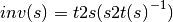
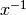

skrf.network.inv¶
- skrf.network.inv(s)¶
Calculates ‘inverse’ s-parameter matrix, used for de-embeding
This is not literally the inverse of the s-parameter matrix. Instead, it is defined such that the inverse of the s-matrix cascaded with itself is unity.

where  is the matrix inverse. In words, this is the inverse of the scattering transfer parameters matrix transformed into a scattering parameters matrix.
Parameters : s : numpy.ndarray (shape fx2x2)
scattering parameter matrix.
Returns : s’ : numpy.ndarray
inverse scattering parameter matrix.